← All workProject 10 of 10
Project 10Designed and calculated, not built
Small Wind Turbine
A 1.3 m, 3-blade small wind turbine with 3D-printable blades, a 400 W direct-drive permanent-magnet generator, a furling tail and a 6 m guyed tilt-up tower. Designed in Inventor as a working model driven by yaw, rotor and furl angles, with a blade-element-momentum rotor design, generator matching, furl balance and IEC 61400-2 load checks.
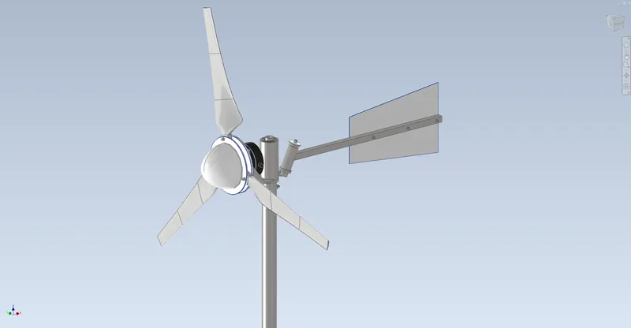
- Rotor diameter
- 1.3m
- At 11 m/s (calculated)
- 294W
- Peak power coefficient (BEM)
- 0.42
- Parts in assembly
- 67
01Overview
A battery-charging wind turbine for a back yard. The three blades are 0.6 m long and printed in ASA in three segments each, joined by bonded carbon-fibre rods; their airfoils blend from the thick SG6040 at the root to the SG6043, a section designed for small turbines. Chord and twist follow the Schmitz optimum for a tip-speed ratio of 5. The rotor bolts straight onto an ATO 400 W 24 V permanent-magnet generator (no gearbox), which sits on a welded steel nacelle that yaws on two 6007 bearings on a hollow spindle in the top of a 2 in. steel mast. The rotor axis is offset 35 mm from the yaw axis, so in high winds the thrust turns the rotor out of the wind while the tail swings up its 20 deg inclined hinge (furling). A diversion charge controller with a dump load and a shorting brake switch complete the overspeed protection.
The Inventor model is a working model: three parameters (Yaw, Spin, Furl) move the nacelle, the rotor and the tail, it has zero free degrees of freedom, and the interference check finds no clashes at eight poses including full furl. The masses, inertias and the tail's centre of gravity used in the calculations are measured from it. Designed and calculated only; nothing has been built.
Tools Autodesk Inventor 2027 / Python / NumPy / SciPy / NeuralFoil / Matplotlib
What I did
- Ran blade-element momentum (Prandtl tip and hub loss, Buhl correction) on polars computed by NeuralFoil for the actual blended airfoil at every station and Reynolds number, then lofted the blade in Inventor through exactly those sections.
- Matched the rotor to a real generator by digitising the vendor's power curve and solving for the stable operating point at every wind speed, including furling.
- Built the Inventor model as a working mechanism with three drive parameters and a furl hinge tilted 20 deg, and fed its measured masses and tail CG back into the furl and load calculations.
- Wrote a complete bill of materials for a working system: generator, controller, dump load, batteries, wiring, earthing, guys, anchors and concrete. $618 of the $2,661 is confirmed on vendor pages.
Specification
- Rotor
- 1.3 m diameter, 3 blades, upwind; SG6040 root blending to SG6043; chord 125 to 47 mm, twist 20.9 to 4.0 deg (Schmitz, TSR 5)
- Blades
- ASA printed in 3 segments per blade (span vertical, 6 walls, 40 % gyroid), 5 mm and 3 mm pultruded carbon rods bonded across the joints, 314 g each
- Generator
- ATO-PMG-NE400WM 24 V 3-phase permanent magnet, 400 W at 800 rpm, max 445 W, direct drive on a 6061 hub
- Nacelle and yaw
- Welded S235 frame, 2 x 6007-2RS on a hollow 1045 spindle, rotor axis 35 mm off the yaw axis
- Overspeed
- Furling tail on a 20 deg inclined hinge, TriStar TS-45 diversion controller with a 1.2 ohm dump load, shorting stop switch
- Tower
- 2 x 10 ft of 2 in. Sch 40 galvanised pipe, hinged base for tilt-up, 4 guys at 4.6 m, hub height 6.2 m
- Electrical
- 3-phase to a rectifier at the base, 24 V bank of 2 x 100 Ah AGM batteries, breaker, fuse, earthing and surge arrester
- Assembly
- 67 occurrences, 36 unique files, 198 constraints, 0 DOF; driven by Yaw, Spin and Furl; 64 kg incl. the tower
02Design decisions4 changes
- 01
Matched the rotor to a real generator curve
- Finding
- Hobby motors used as generators spin far too fast for a 1.3 m rotor. The ATO 400 W unit's 24 V power curve (charging from 400 rpm, 403 W at 800 rpm) fits a rotor running at a tip-speed ratio of about 5 at 11 m/s.
- Action
- Designed the blade for TSR 5, then found where the rotor torque crosses the generator's load line at every wind speed using blade-element momentum with NeuralFoil polars of the actual blended sections.
- Outcome
- With the battery holding the voltage, the generator keeps the rotor at TSR 4.6 to 5.0 from 6 to 11 m/s, close to the Cp peak, so no MPPT controller is needed. 294 W at 11 m/s.
- 02
Sized the furling tail by a sweep, not a rule of thumb
- Finding
- My first tail (30 deg hinge, resting 40 deg past its lowest point) furled too late: the output climbed to about 810 W, almost twice the generator's 445 W maximum.
- Action
- Balanced thrust x offset against the gravity torque of the tail on its inclined hinge, using the tail's mass and CG from Inventor, for 20 combinations of hinge tilt and rest angle.
- Outcome
- A softer tail (20 deg hinge, 25 deg rest) furls from 8.5 m/s and levels the output at about 440 W up to 25 m/s.
- 03
Caught a hub that clamped nothing
- Finding
- Measuring the CAD showed the outer blade bolts on a 110 mm radius sat outside the 190 mm hub disc and clamp plate, so each blade was held by one bolt.
- Action
- Enlarged the hub disc and clamp plate to 240 mm and re-ran the interference and working-model checks.
- Outcome
- Both bolts per blade are now inside the clamp faces, with about 9 kN of clamp friction per blade against 2.2 kN of centrifugal load at runaway.
- 04
Made the printed blades carry real loads
- Finding
- Printed span-vertical, a blade's bending stress acts across the layer lines, its weakest direction, and the 10 % thick outer airfoil leaves little room for a spar.
- Action
- Used the 16 % SG6040 at the root, put carbon rods across each segment joint on the camber line (wall at least 1.1 mm), and checked the root against the IEC 61400-2 parked case plus runaway centrifugal load.
- Outcome
- Root safety factor 1.9 across layers, rods 4.9 to 5.0, tip deflection 23 mm against 109 mm of clearance to the mast. Listed coupon tests and a proof load as open items.
03Views10 renders


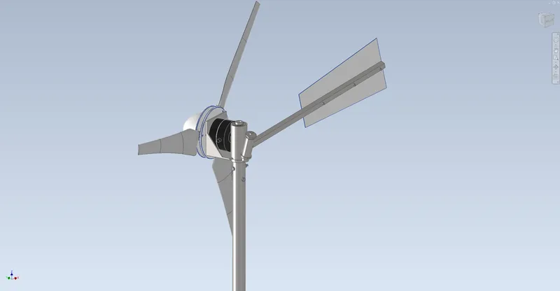

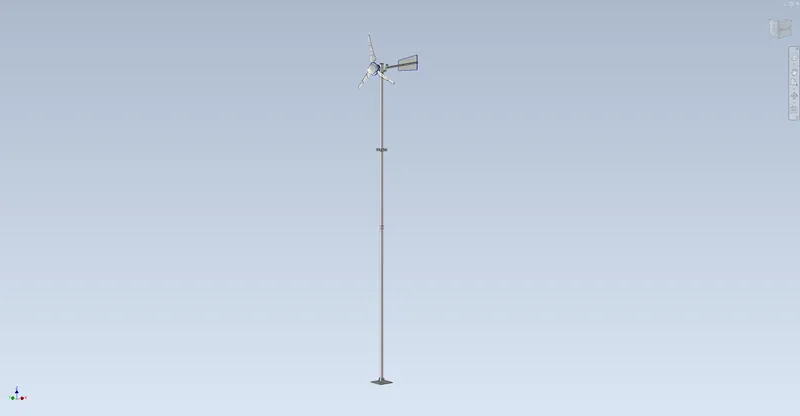

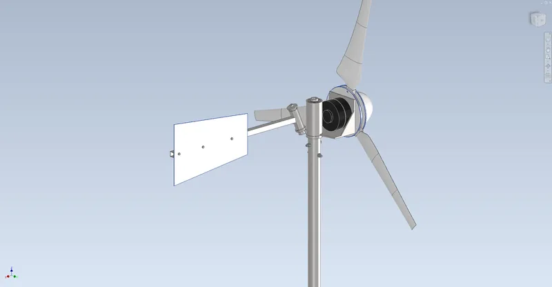

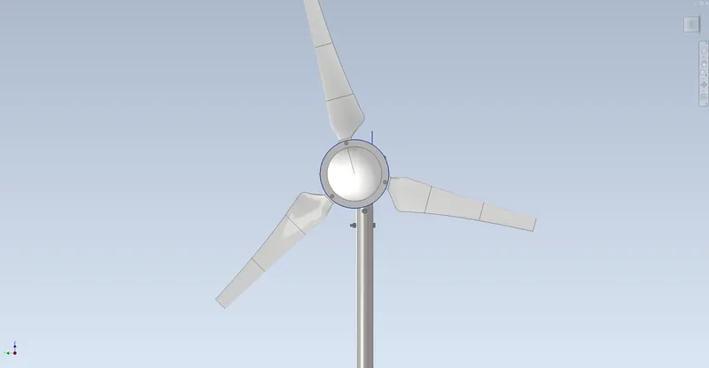

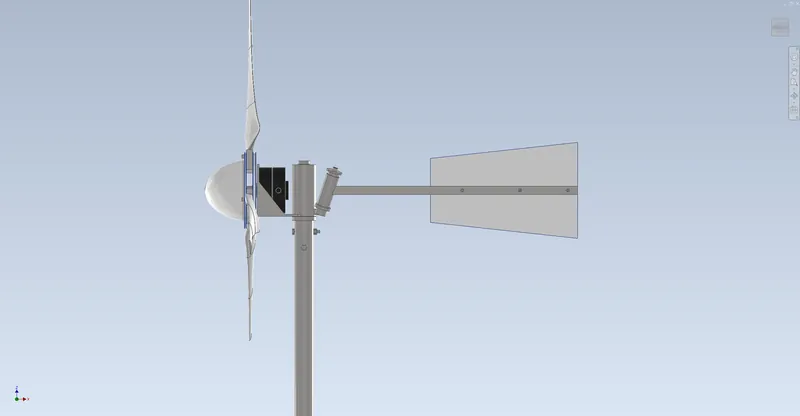

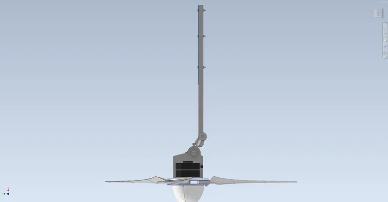

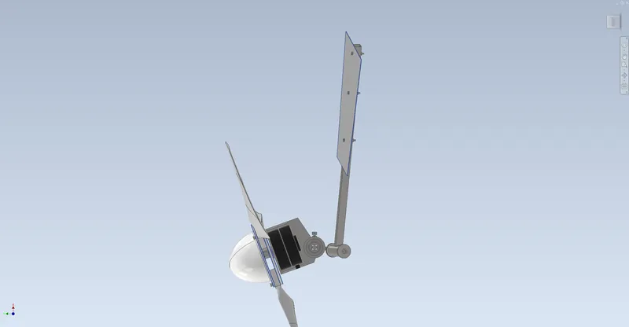

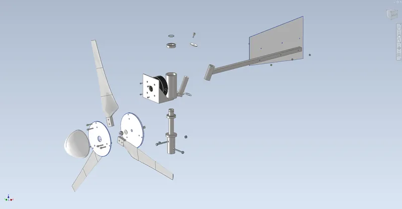

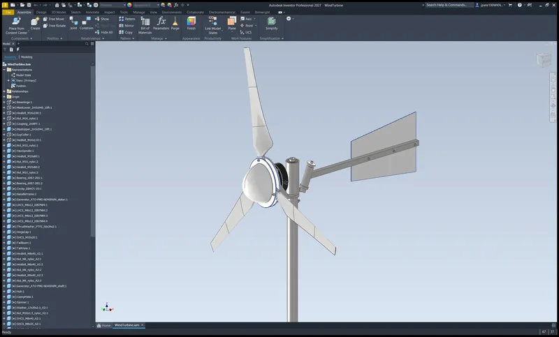
04Drawings7 sheets

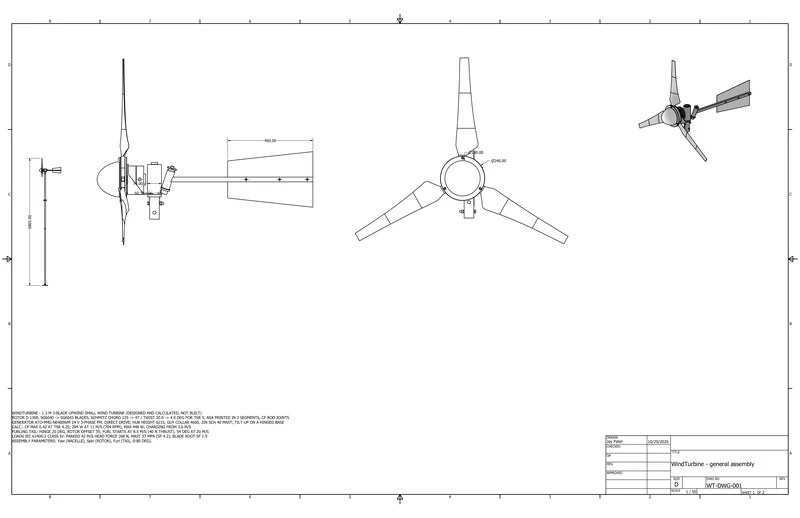

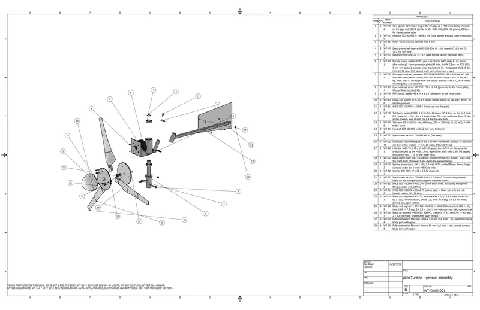

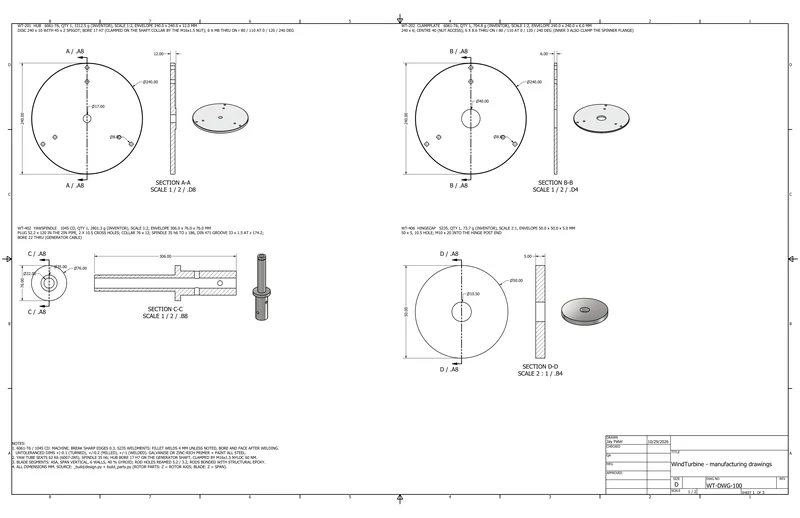

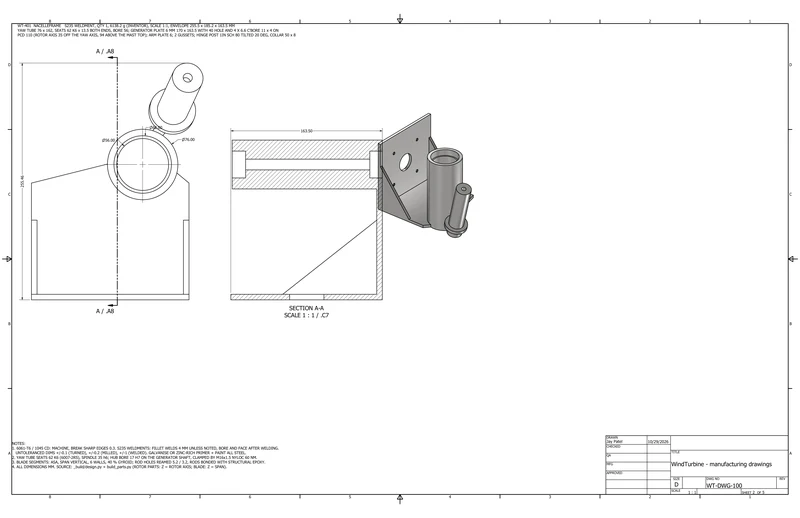

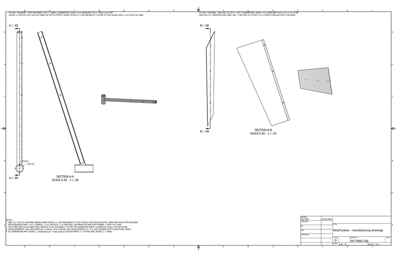

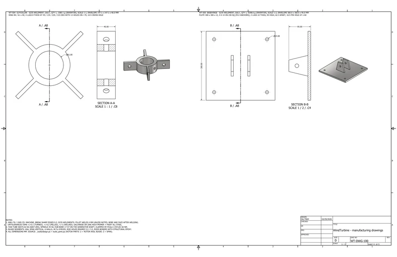

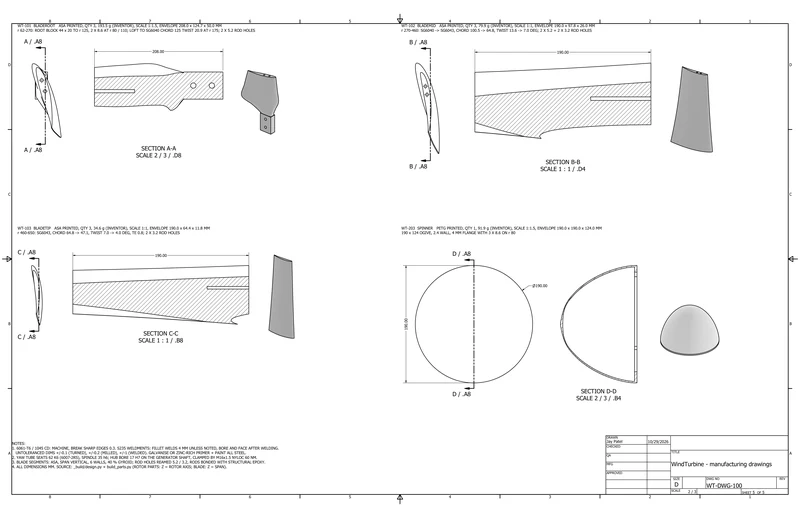
05Analysissimulated unless stated
A1 Rotor and power

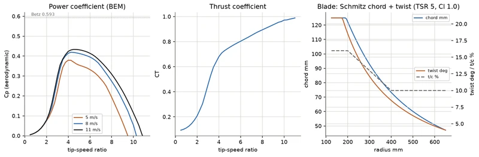

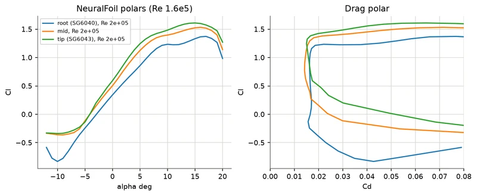

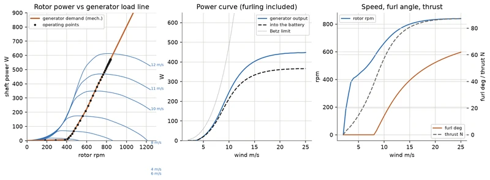
A2 Furling, start-up and structure

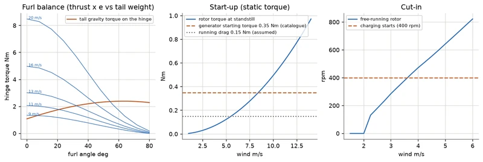

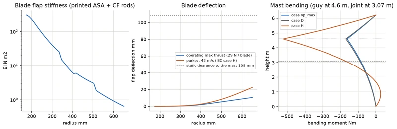
06Results8 checks
| Check | Result | Margin / status |
|---|---|---|
| Aerodynamics | Peak Cp 0.42 at TSR 4.25 (8 m/s); local angle of attack 3.2 to 5.7 deg along the blade at the design point | Calculated |
| Power | 294 W at 11 m/s (704 rpm), 251 W into the battery; charging from 3.6 m/s; levels off at about 440 W | Calculated |
| Energy | About 400 kWh a year into the battery at a 5 m/s mean wind (Rayleigh) | Calculated |
| Furling | Starts at 8.5 m/s; 54 deg at 20 m/s; runaway limited to 1,573 rpm if the battery disconnects | Calculated |
| Structure | Blade root SF 1.9, carbon rods SF 4.9; mast 57 MPa in a 42 m/s parked gale (SF 4.2); guys SF 13 | Calculated |
| Start-up | From standstill the rotor needs 8.5 m/s to beat the generator's 0.35 Nm catalogue starting torque: the main open item | Calculated |
| Working model | 0 DOF, 0 clashes at 8 poses incl. full furl; yaw, rotor and tail angles match their drivers within 0.0001 deg | Checked in Inventor |
| Clearances | Blade to mast at least 109 mm over a turn; tail to blades 280 mm at full furl | Measured in Inventor |
07Parts list59 lines, $2,661.46
From the project's bill of materials (WindTurbine_BOM.csv), grouped by how you get each part. Quantities are from the CAD assembly. Prices marked Confirmed were checked against a vendor listing; Est. prices are estimates. Designed and calculated, not built.
- Buy · 87 pcs
- 37lines
- Print · 10 pcs
- 4lines
- Fabricate · 9 pcs
- 9lines
- Hardware · 16 pcs
- 9lines
- Confirmed
- $618.25 23.2%
- Est.
- $2,043.21 76.8%
Complete per the buildability check: every part it lists for a working build is in this BOM. Open items are below.
P1 Buy purchased and vendor parts · 37 lines, 87 pcs
| Qty | Part no. | Description | Unit | Line |
|---|---|---|---|---|
| 1 off | WT-301 | Permanent-magnet generator ATO-PMG-NE400WM, 24 V 3-phase AC, 400 W at 800 rpm (vendor curve), max 445 W, start torque <= 0.35 Nm, 4.5 kg, IP54, class F; envelope from the vendor drawing (145 x 82, M16 shaft); mounting PCD 110 assumedSource: ATO (ato.com) ATO-PMG-NE400WM · Material: Aluminium shell / NdFeB / copper (generator envelope)Price: (listing): ato.com 400W alternator page ATO-PMG-NE400WM, 24 V option, read 2026-10-29 | $298.97 | $298.97Confirmed1 × $298.97 |
| 1 off | WT-301S | Generator rotor shaft (part of the ATO-PMG-NE400WM, split out so the rotor can turn in the model): 17 mm, 25 collar, M16x1.5 threadSource: ATO (part of WT-301) · Material: Stainless steel A2-70 | Incl. | |
| 6 off | WT-104 | Pultruded carbon fibre rod 5 mm x 130 mm (cut from 1 m), bonded across a blade joint with epoxySource: Pultruded CF rod (Amazon / RockWest class) | Incl. | |
| 6 off | WT-105 | Pultruded carbon fibre rod 3 mm x 90 mm (cut from 1 m), bonded across a blade joint with epoxySource: Pultruded CF rod (Amazon / RockWest class) | Incl. | |
| 2 off | WT-403 | Deep groove ball bearing 6007-2RS 35 x 62 x 14, sealed (C 16.8 kN, C0 10.2 kN, SKF data)Source: SKF 6007-2RS1 (or NSK / FAG equivalent) · Material: Bearing steel (52100)Price: SKF 6007-2RS1 eBay US listings $12-13 (search snippet) | $12.50 | $25.00Est.2 × $12.50 |
| 1 off | WT-407 | PTFE thrust washer 48 x 34.4 x 1.9 (tail sleeve on the hinge collar)Source: McMaster-Carr PTFE washer class | $3.00 | $3.00Est.1 × $3.00 |
| 1 off | WT-501 | Mast lower: 2in Sch 40 galvanised steel pipe 60.3 x 3.91 x 10 ft (3048), threaded top end, 16.5 hinge holeSource: 2in x 10ft galvanised pipe (Home Depot / Ferguson) · Material: Steel ASTM A53 Gr. B, hot-dip galvanisedPrice: Home Depot STZ 2 in. x 10 ft galv. Sch 40 pipe 315-2X120, search snippet $85.46-90.46 | $85.46 | $85.46Est.1 × $85.46 |
| 1 off | WT-502 | Mast upper: 2in Sch 40 galvanised steel pipe 60.3 x 3.91 x 10 ft, threaded bottom end; 2 x 10.5 for the yaw spindle bolts, 1 x 10.5 for the guy collarSource: 2in x 10ft galvanised pipe (Home Depot / Ferguson) · Material: Steel ASTM A53 Gr. B, hot-dip galvanisedPrice: Home Depot STZ 2 in. x 10 ft galv. Sch 40 pipe 315-2X120, search snippet $85.46-90.46 | $85.46 | $85.46Est.1 × $85.46 |
| 1 off | WT-503 | Pipe coupling 2in NPT, galvanised malleable iron (joins the mast lengths; thread modelled at the pipe OD)Source: 2in galvanised coupling (Home Depot / Ferguson) · Material: Steel ASTM A53 Gr. B, hot-dip galvanisedPrice: Home Depot STZ 2 in. galvanized coupling 311-CO-2, search snippet | $11.34 | $11.34Est.1 × $11.34 |
| 3 off | WT-512 | SHCS ISO 4762 M8 x 35 A2-70 (clamp plate + blade root into the hub thread; Loctite 243, 12 Nm)Source: ISO 4762 / DIN 7984 (McMaster / Bolt Depot) · Material: Stainless steel A2-70Price: Zoro M8 x 35 18-8 SHCS 50-pack $15.69 (search snippet) | $0.31 | $0.93Est.3 × $0.31 |
| 3 off | WT-513 | SHCS ISO 4762 M8 x 40 A2-70 (inner blade bolts, also clamp the spinner flange; Loctite 243, 12 Nm)Source: ISO 4762 / DIN 7984 (McMaster / Bolt Depot) · Material: Stainless steel A2-70Price: Zoro M8 x 40 18-8 SHCS 50-pack $15.89 (search snippet) | $0.32 | $0.96Est.3 × $0.32 |
| 4 off | WT-514 | Low-head cap screw DIN 7984 M6 x 12 8.8 (generator to the frame plate, C'bored flush; Loctite 243)Source: ISO 4762 / DIN 7984 (McMaster / Bolt Depot) · Material: Steel class 8.8, zinc plated | $0.30 | $1.20Est.4 × $0.30 |
| 1 off | WT-515 | SHCS ISO 4762 M10 x 20 8.8 (hinge cap into the post)Source: ISO 4762 / DIN 7984 (McMaster / Bolt Depot) · Material: Steel class 8.8, zinc plated | $0.40 | $0.40Est.1 × $0.40 |
| 1 off | WT-523 | Washer ISO 7089 17 x 30 x 2.5 A2 (hub nut)Source: ISO 7089 (McMaster / any) · Material: Stainless steel A2-70 | $0.20 | $0.20Est.1 × $0.20 |
| 2 off | WT-601 | ASA filament 1 kg spool (Bambu Lab ASA): 9 blade segments, about 0.92 kg printed at 6 walls / 40 % gyroid plus supports and brimsNot in CADSource: Bambu Lab (MatterHackers listing) · Material: ASAPrice: (listing): MatterHackers Bambu Lab ASA 1 kg, read 2026-10-29 | $46.99 | $93.98Confirmed2 × $46.99 |
| 1 off | WT-602 | Pultruded carbon fibre rod 5 mm x 1 m: cut 6 x 130 mm for the root-mid blade jointsNot in CADSource: Easy Composites / Goodwinds class · Material: Carbon fibre / epoxyPrice: Easy Composites EU CFROD-5-1 EUR 10.45 ex VAT (read); no US listing read | $12.00 | $12.00Est.1 × $12.00 |
| 1 off | WT-603 | PETG filament 1 kg spool: spinner (92 g)Not in CADSource: Bambu Lab / Polymaker · Material: PETGPrice: Bambu PETG 1 kg, no US listing read | $25.00 | $25.00Est.1 × $25.00 |
| 1 off | WT-604 | Pultruded carbon fibre rod 3 mm x 1 m: cut 6 x 90 mm for the mid-tip blade jointsNot in CADSource: Ready Made RC · Material: Carbon fibre / epoxyPrice: (listing): Ready Made RC 3 mm x 1 m carbon rod, read 2026-10-29 | $2.30 | $2.30Confirmed1 × $2.30 |
| 1 off | WT-605 | Structural epoxy 50 ml (Loctite EA 9462 / JB Weld class): bonds the carbon rods and the blade segment jointsNot in CADSource: Loctite / JB Weld · Material: Epoxy | $12.00 | $12.00Est.1 × $12.00 |
| 1 off | WT-611 | Charge controller Morningstar TriStar TS-45 in diversion mode (12/24/48 V, 45 A): keeps the 24 V bank at 28.8 V by switching the turbine surplus into the dump loadNot in CADSource: Morningstar (solar-electric.com) · Material: -Price: (listing): solar-electric.com Morningstar TS-45, read 2026-10-29 | $223.00 | $223.00Confirmed1 × $223.00 |
| 2 off | WT-612 | Dump (diversion) load: aluminium-housed wirewound resistor 500 W 0.6 ohm (RXLG class), 2 in series = 1.2 ohm, 24 A / 690 W at 28.8 V, on a vented 3 mm aluminium plateNot in CADSource: Generic RXLG (Amazon / eBay) · Material: Aluminium / wirewoundPrice: no 0.5-0.7 ohm 500 W RXLG listing found | $35.00 | $70.00Est.2 × $35.00 |
| 1 off | WT-613 | 3-phase bridge rectifier module MDS100A 1600 V on a 100 x 80 mm finned heatsink (turbine AC to battery DC, in the base junction box)Not in CADSource: Generic MDS100A (Amazon / eBay) · Material: -Price: MDS100A module $15 (snippet) + heatsink $15 | $30.00 | $30.00Est.1 × $30.00 |
| 1 off | WT-614 | Stop switch: 3-pole switch that shorts the generator phases (brake; slows the rotor to < 40 rpm up to 15 m/s by calculation) - MidNite / Primus stop-switch classNot in CADSource: MidNite Solar / Primus class (solar-electric.com) · Material: -Price: Primus / MidNite stop switch, solar-electric.com search snippet $65 | $65.00 | $65.00Est.1 × $65.00 |
| 2 off | WT-615 | Battery 12 V 100 Ah deep-cycle AGM (Renogy), 2 in series = 24 V bank; AGM, not lithium: a BMS cut-off would unload the turbineNot in CADSource: Renogy · Material: Lead-acid AGMPrice: Renogy 12V 100Ah AGM, Solar Cellz USA search snippet $195 | $195.00 | $390.00Est.2 × $195.00 |
| 1 off | WT-616 | Battery protection: 40 A DC breaker (controller - battery) + ANL 60 A fuse and holder at the batteryNot in CADSource: Blue Sea / generic · Material: - | $45.00 | $45.00Est.1 × $45.00 |
| 1 off | WT-617 | Wiring: 3 x 12 AWG stranded drop cable down the mast (8 m), 2 x 8 AWG THHN 20 m run to the batteries, IP65 junction box at the base, cable glands, lugs, strain reliefNot in CADSource: Southwire / generic (Home Depot) · Material: Copper / PVCPrice: 8 AWG THHN 130 ft at $0.96-1.17/ft (Home Depot snippet) + 12 AWG drop + box / glands / lugs | $210.00 | $210.00Est.1 × $210.00 |
| 1 off | WT-618 | Lightning / earthing: 5/8 in. x 8 ft copper-bonded ground rod + clamp, 6 AWG bare copper bond to the mast base, DC surge arrester (MidNite MNSPD class)Not in CADSource: ERICO / MidNite (Home Depot) · Material: CopperPrice: ground rod + clamp $26.56 (Home Depot snippet) + 6 AWG + surge arrester ~$95 | $130.00 | $130.00Est.1 × $130.00 |
| 1 off | WT-619 | Guy wire 3/16 in. 7x19 galvanised aircraft cable, 100 ft (4 guys x 6.1 m + terminations); 18.7 kN breakingNot in CADSource: Hanes Supply / Tractor Supply · Material: Galvanised steelPrice: 3/16 in. 7x19 galv. $0.39/ft (Hanes Supply snippet) x 100 ft | $39.00 | $39.00Est.1 × $39.00 |
| 4 off | WT-620 | Turnbuckle 3/8 in. x 6 in. galvanised, eye & eye (guy tensioning, 400 N pretension)Not in CADSource: Hardware store (Chicago Hardware class) · Material: Galvanised steelPrice: hardware-store eye & eye; jaw & jaw listings $46-52 (snippets) | $15.00 | $60.00Est.4 × $15.00 |
| 1 off | WT-621 | Wire rope clips 3/16 in. galvanised (16) + thimbles 3/16 in. (8)Not in CADSource: Hardware store · Material: Galvanised steel | $25.00 | $25.00Est.1 × $25.00 |
| 8 off | WT-622 | Shackle 1/4 in. galvanised (guy collar lugs and anchor eyes)Not in CADSource: Hardware store · Material: Galvanised steel | $4.00 | $32.00Est.8 × $4.00 |
| 4 off | WT-623 | Screw-in earth anchor 6 in. x 48 in. double helix, galvanised (guys at 4.0 m radius; check soil)Not in CADSource: Tie Down Engineering (Hemlock Hardware listing) · Material: Galvanised steelPrice: Tie Down 6 in. x 48 in. galv. anchor 703199, Hemlock Hardware search snippet | $28.99 | $115.96Est.4 × $28.99 |
| 13 off | WT-624 | Concrete mix 80 lb bag (Quikrete): base pad 600 x 600 x 600 mm under the hinged baseNot in CADSource: Quikrete (Home Depot) · Material: ConcretePrice: Quikrete 80 lb $5.38-7.04 (third-party snippets) | $6.00 | $78.00Est.13 × $6.00 |
| 4 off | WT-625 | Wedge anchor M12 x 110 zinc (hinged base to the pad)Not in CADSource: Hilti HST3 / Simpson class · Material: Steel zinc | $4.00 | $16.00Est.4 × $4.00 |
| 1 off | WT-626 | Tilt-up kit (install equipment): gin pole 1-1/2 in. galvanised pipe 10 ft + 2 t come-along winch + 1/4 in. lifting cableNot in CADSource: Hardware store · Material: Steel | $95.00 | $95.00Est.1 × $95.00 |
| 2 off | WT-627 | Furl stop bumper: rubber stop 40 x 25 (tail rest stop and full-furl stop on the frame), M6 studNot in CADSource: McMaster-Carr rubber bumper class · Material: Rubber | $4.00 | $8.00Est.2 × $4.00 |
| 1 off | WT-628 | Consumables: Loctite 243, lithium grease (hinge post), zinc-rich touch-up paintNot in CADSource: Loctite / generic · Material: - | $20.00 | $20.00Est.1 × $20.00 |
| Buy subtotal | $2,310.16 | |||
P2 Print 3D-printed parts · 4 lines, 10 pcs
| Qty | Part no. | Description | Unit | Line |
|---|---|---|---|---|
| 3 off | WT-101 | Blade root segment r 62-270: root block 44 x 20 (2 x 8.6 holes for M8 on r 80 / 110), SG6040 section, chord 125, twist 20.9 deg; 2 x 5.2 rod holes; printed ASA, span verticalSource: 3D printed in-house (Bambu ASA) · Material: ASA, printed (Bambu ASA), 6 walls, 40 % gyroid | Incl. | |
| 3 off | WT-102 | Blade mid segment r 270-460: SG6040 -> SG6043 blend, chord 100 -> 65, twist 13.6 -> 7.0 deg; 2 x 5.2 + 2 x 3.2 rod holes; printed ASA, span verticalSource: 3D printed in-house (Bambu ASA) · Material: ASA, printed (Bambu ASA), 6 walls, 40 % gyroid | Incl. | |
| 3 off | WT-103 | Blade tip segment r 460-650: SG6043, chord 65 -> 47, twist 7.0 -> 4.0 deg; 2 x 3.2 rod holes; printed ASA, span verticalSource: 3D printed in-house (Bambu ASA) · Material: ASA, printed (Bambu ASA), 6 walls, 40 % gyroid | Incl. | |
| 1 off | WT-203 | Spinner (nose cone) 190 x 120, 2.4 wall, PETG printed flange down; flange clamped under the 3 inner M8 blade boltsSource: 3D printed in-house (PETG) · Material: PETG, printed, 3 walls, 20 % gyroid | Incl. | |
| Print subtotal | $0.00 | |||
P3 Fabricate machined, welded and cut parts · 9 lines, 9 pcs
| Qty | Part no. | Description | Unit | Line |
|---|---|---|---|---|
| 1 off | WT-201 | Hub disc 6061-T6: 240 x 10 with 45 spigot, bore 17 H7 on the generator shaft (clamped by the M16x1.5 nut against the shaft collar), 6 x M8 tapped through on r 80 / 110 for the blade rootsSource: Machined in-house · Material: Aluminium 6061-T6Price: CNC turned + drilled / tapped, one-off | $45.00 | $45.00Est.1 × $45.00 |
| 1 off | WT-202 | Blade clamp plate 6061-T6 240 x 6, 40 centre hole (nut access), 6 x 8.6 for the blade bolts (the inner 3 also clamp the spinner flange)Source: Machined in-house · Material: Aluminium 6061-T6Price: waterjet + drill / tap | $25.00 | $25.00Est.1 × $25.00 |
| 1 off | WT-402 | Yaw spindle 1045: 52.2 plug in the 2in pipe (2 x M10 cross bolts), 76 collar on the pipe end, 35 h6 spindle for 2 x 6007-2RS, DIN 471 groove, 22 bore for the generator cableSource: Machined in-house · Material: AISI 1045 CD steelPrice: CNC turned + cross-drilled, one-off | $60.00 | $60.00Est.1 × $60.00 |
| 1 off | WT-406 | Hinge cap washer S235 50 x 5 (keeps the tail sleeve on the post), M10 x 20 into the post endSource: Machined in-house · Material: Steel S235 / A36, welded, painted | $4.00 | $4.00Est.1 × $4.00 |
| 1 off | WT-401 | Nacelle frame, welded S235: yaw tube 76 (2 x 6007 seats 62 K6, bored after welding), 6 mm generator plate (40 hole, 4 x M6 C'bore on PCD 110), 6 mm arm plate, 2 gussets, hinge bracket and 33.4 hinge post tilted 20 deg (1in Sch 80 pipe, M10 tapped end); zinc-rich primer + paintSource: Fabricated in-house (welded, bored) · Material: Steel S235 / A36, welded, paintedPrice: steel + weld + bore the yaw tube, one-off | $90.00 | $90.00Est.1 × $90.00 |
| 1 off | WT-404 | Tail boom, welded S235: 1-1/4in Sch 40 sleeve (35.0 bore on the 33.4 post, 0.8 clearance) + 1in x 1in x 2 square tube 780 long, welded at 90 + 20 deg so the boom is level at rest; 3 x 6.4 for the vane boltsSource: Fabricated in-house (welded) · Material: Steel S235 / A36, welded, paintedPrice: steel + weld | $25.00 | $25.00Est.1 × $25.00 |
| 1 off | WT-405 | Tail vane 5052-H32 1.6 mm, 460 long, 200 -> 300 high (0.115 m2), 3 x M6 to the boomSource: Cut in-house (5052 sheet) · Material: Aluminium 5052-H32 sheetPrice: sheet + shear | $18.00 | $18.00Est.1 × $18.00 |
| 1 off | WT-504 | Guy collar, welded S235: 90 / 61 x 40 ring, 4 lugs 8 thick with 13 holes for 1/4in shackles, M10 cross bolt; galvanisedSource: Fabricated in-house (welded) · Material: Steel S235 / A36, welded, paintedPrice: steel + weld + galvanise | $30.00 | $30.00Est.1 × $30.00 |
| 1 off | WT-505 | Hinged base, welded S235: plate 300 x 300 x 12 with 4 x 14 for M12 anchors in the concrete pad, two 10 mm lugs with 16.5 pin holes (the mast tilts down about the M16 pin); galvanisedSource: Fabricated in-house (welded) · Material: Steel S235 / A36, welded, paintedPrice: steel + weld + galvanise | $45.00 | $45.00Est.1 × $45.00 |
| Fabricate subtotal | $342.00 | |||
P4 Hardware fasteners, pins, keys, rings · 9 lines, 16 pcs
| Qty | Part no. | Description | Unit | Line |
|---|---|---|---|---|
| 1 off | WT-511 | Retaining ring DIN 471 35 x 1.5 (yaw spindle, above the upper 6007)Source: DIN 471 (McMaster / any) · Material: Spring steel, phosphated (DIN 471) | $0.50 | $0.50Est.1 × $0.50 |
| 2 off | WT-516 | Hex bolt ISO 4014 M10 x 80 8.8 zinc (yaw spindle and guy collar cross bolts)Source: ISO 4014 / 4017 hex bolt (McMaster / Bolt Depot) · Material: Steel class 8.8, zinc plated | $0.60 | $1.20Est.2 × $0.60 |
| 1 off | WT-517 | Hex bolt ISO 4014 M16 x 100 8.8 zinc (base hinge pin)Source: ISO 4014 / 4017 hex bolt (McMaster / Bolt Depot) · Material: Steel class 8.8, zinc plated | $2.00 | $2.00Est.1 × $2.00 |
| 3 off | WT-518 | Hex bolt ISO 4014 M6 x 40 A2 (tail vane to boom)Source: ISO 4014 / 4017 hex bolt (McMaster / Bolt Depot) · Material: Steel class 8.8, zinc plated | $0.30 | $0.90Est.3 × $0.30 |
| 3 off | WT-519 | Nylon-insert lock nut DIN 985 M10 8 zincSource: ISO 4032 / DIN 985 (McMaster / Bolt Depot) · Material: Steel class 8.8, zinc plated | $0.30 | $0.90Est.3 × $0.30 |
| 1 off | WT-520 | Nylon-insert lock nut DIN 985 M16 8 zinc (hinge pin)Source: ISO 4032 / DIN 985 (McMaster / Bolt Depot) · Material: Steel class 8.8, zinc plated | $0.80 | $0.80Est.1 × $0.80 |
| 3 off | WT-521 | Nylon-insert lock nut DIN 985 M6 A2 (tail vane)Source: ISO 4032 / DIN 985 (McMaster / Bolt Depot) · Material: Stainless steel A2-70 | $0.20 | $0.60Est.3 × $0.20 |
| 1 off | WT-522 | Nylon-insert lock nut DIN 985 M16 x 1.5 fine A2 (hub on the generator shaft, 60 Nm: clamps the hub against the shaft collar)Source: ISO 4032 / DIN 985 (McMaster / Bolt Depot) · Material: Stainless steel A2-70 | $1.50 | $1.50Est.1 × $1.50 |
| 1 off | WT-524 | Hex bolt ISO 4014 M10 x 110 8.8 zinc (guy collar cross bolt)Source: ISO 4014 / 4017 hex bolt (McMaster / Bolt Depot) · Material: Steel class 8.8, zinc plated | $0.90 | $0.90Est.1 × $0.90 |
| Hardware subtotal | $9.30 | |||
P5 What else you need to make it work
From Tests/Buildability/buildability_check.md (2026-10-29). Verdict: BUILDABLE, with six things to settle before ordering.
Change before buying
- Start-up: the rotor needs 8.5 m/s from standstill against the 0.35 Nm catalogue starting torque. Measure the delivered generator; above about 0.2 Nm ask ATO for a lower-cogging unit or widen the inboard chord.
- Generator data: power curve read by hand from an image; efficiency, mounting PCD 110, internal bearings and the curve above 800 rpm are assumptions. Get the datasheet before machining the frame plate.
- Tower-top frequency about 7 Hz (rough) sits inside the 1P band 6.7-14 Hz; guying at 5.2 m instead of 4.6 m moves it to about 14 Hz.
Also needed
- Test first
- Tensile-test printed ASA coupons across the layers (15 MPa assumed) and proof-load one bonded blade to 2 x the operating root moment; weigh-match and balance the three blades.
- Measure first
- Spin the generator with a drill into the battery: volts, amps and rpm against the vendor curve, and the breakaway torque.
- Field check
- Furl start (8.5 m/s calculated, quasi-static): trim with tail ballast.
- Site
- 4 m guy radius, soil that holds the screw anchors, local height / permit rules.
- Install
- Tilt-up with a gin pole and a 2 t come-along (in the BOM as WT-626); keep the stop switch closed while raising.
Now in the BOM: Charge controller that can divert to a dump load; Dump; 3-phase rectifier between the generator and the battery; Stop / brake switch that shorts the generator; 24 V battery bank; Guy wires, turnbuckles, clips and earth anchors for the tilt-up mast; Concrete pad and anchors for the hinged base; Earthing and surge protection.
Cost in the buildability file: BOM $2,661.46 ($618.25 confirmed: generator, TS-45 controller, ASA filament, 3 mm rod), parts + estimated fabrication.
- Download BOM (CSV)CSV · 18 kB
- Buildability checkMD · 8 kB
08Files9 downloads
- Calculation reportPDF · 533 kB
- Assembly drawingPDF · 298 kB
- Manufacturing drawingsPDF · 363 kB
- Bill of materialsCSV · 18 kB
- Test summaryMD · 7 kB
- Buildability checkMD · 8 kB
- Assembly STEPSTP · 1.3 MB
- Print plate 1, ASA blades3MF · 2.0 MB
- Print plate 2, PETG spinner3MF · 376 kB
09Limits and assumptionsread before quoting a number
Designed and calculated only: the turbine has not been built, and every number is a CAD measurement, a calculation or a catalogue value. The generator's power curve was read by hand from the vendor's chart; its efficiency (80 %), running drag, mounting holes and internal bearings are my assumptions, and its geometry is an envelope model from the vendor drawing. Airfoil polars come from NeuralFoil, a network trained on XFoil, not from a wind tunnel. The furl calculation is quasi-static and leaves out tail aerodynamics and yaw dynamics. Printed-ASA strength across layers (15 MPa) and the effective stiffness are assumed and should be checked on test coupons. The guy wires and anchors are in the bill of materials but not in the CAD. Only the generator, controller, ASA filament and 3 mm rod prices were confirmed on vendor pages; the rest are estimates. The first plan named a gearbox; I chose direct drive because the generator's 400-800 rpm range already matches the rotor.